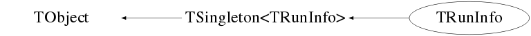

class TRunInfo: public TSingleton<TRunInfo>
Function Members (Methods)
public:
| virtual | ~TRunInfo() |
| void | TObject::AbstractMethod(const char* method) const |
| void | Add(TRunInfo* runinfo) |
| void | AddBadCycle(int bad_cycle) |
| virtual void | TObject::AppendPad(Option_t* option = "") |
| virtual void | TObject::Browse(TBrowser* b) |
| virtual TEventBuildingLoop::EBuildMode | BuildMode() const |
| ULong_t | TObject::CheckedHash() |
| static TClass* | Class() |
| virtual const char* | TObject::ClassName() const |
| virtual void | Clear(Option_t* opt = "") |
| static void | ClearDate() |
| static void | ClearFullVersion() |
| static void | ClearLibraryVersion() |
| static void | ClearVersion() |
| virtual TObject* | TObject::Clone(const char* newname = "") const |
| virtual Int_t | TObject::Compare(const TObject* obj) const |
| virtual void | TObject::Copy(TObject& object) const |
| virtual void | TObject::Delete(Option_t* option = "")MENU |
| virtual Int_t | TObject::DistancetoPrimitive(Int_t px, Int_t py) |
| virtual void | TObject::Draw(Option_t* option = "") |
| virtual void | TObject::DrawClass() constMENU |
| virtual TObject* | TObject::DrawClone(Option_t* option = "") constMENU |
| virtual void | TObject::Dump() constMENU |
| virtual void | TObject::Error(const char* method, const char* msgfmt) const |
| virtual void | TObject::Execute(const char* method, const char* params, Int_t* error = 0) |
| virtual void | TObject::Execute(TMethod* method, TObjArray* params, Int_t* error = 0) |
| virtual void | TObject::ExecuteEvent(Int_t event, Int_t px, Int_t py) |
| virtual void | TObject::Fatal(const char* method, const char* msgfmt) const |
| virtual TObject* | TObject::FindObject(const char* name) const |
| virtual TObject* | TObject::FindObject(const TObject* obj) const |
| static TRunInfo* | TSingleton<TRunInfo>::Get() |
| static TRunInfo* | TSingleton<TRunInfo>::GetAll() |
| static const char* | GetCalFileData() |
| static const char* | GetCalFileName() |
| static const char* | GetDate() |
| static TDetectorInformation* | GetDetectorInformation() |
| virtual Option_t* | TObject::GetDrawOption() const |
| static Long_t | TObject::GetDtorOnly() |
| static const char* | GetFullVersion() |
| virtual const char* | TObject::GetIconName() const |
| static const char* | GetLibraryVersion() |
| virtual const char* | TObject::GetName() const |
| virtual char* | TObject::GetObjectInfo(Int_t px, Int_t py) const |
| static Bool_t | TObject::GetObjectStat() |
| virtual Option_t* | TObject::GetOption() const |
| static const char* | GetRunInfoFileData() |
| static const char* | GetRunInfoFileName() |
| virtual const char* | TObject::GetTitle() const |
| virtual UInt_t | TObject::GetUniqueID() const |
| static const char* | GetVersion() |
| static const char* | GetXMLODBFileData() |
| static const char* | GetXMLODBFileName() |
| virtual Bool_t | TObject::HandleTimer(TTimer* timer) |
| virtual ULong_t | TObject::Hash() const |
| Bool_t | TObject::HasInconsistentHash() const |
| static double | HPGeArrayPosition() |
| virtual void | TObject::Info(const char* method, const char* msgfmt) const |
| virtual Bool_t | TObject::InheritsFrom(const char* classname) const |
| virtual Bool_t | TObject::InheritsFrom(const TClass* cl) const |
| virtual void | TObject::Inspect() constMENU |
| void | TObject::InvertBit(UInt_t f) |
| virtual TClass* | IsA() const |
| bool | IsBadCycle(int cycle) const |
| virtual Bool_t | TObject::IsEqual(const TObject* obj) const |
| virtual Bool_t | TObject::IsFolder() const |
| Bool_t | TObject::IsOnHeap() const |
| virtual Bool_t | TObject::IsSortable() const |
| Bool_t | TObject::IsZombie() const |
| virtual void | TObject::ls(Option_t* option = "") const |
| void | TObject::MayNotUse(const char* method) const |
| Long64_t | Merge(TCollection* list) |
| virtual Bool_t | TObject::Notify() |
| void | TObject::Obsolete(const char* method, const char* asOfVers, const char* removedFromVers) const |
| void | TObject::operator delete(void* ptr) |
| void | TObject::operator delete(void* ptr, void* vp) |
| void | TObject::operator delete[](void* ptr) |
| void | TObject::operator delete[](void* ptr, void* vp) |
| void* | TObject::operator new(size_t sz) |
| void* | TObject::operator new(size_t sz, void* vp) |
| void* | TObject::operator new[](size_t sz) |
| void* | TObject::operator new[](size_t sz, void* vp) |
| TRunInfo& | operator=(const TRunInfo&) |
| virtual void | TObject::Paint(Option_t* option = "") |
| static Bool_t | ParseInputData(const char* inputdata = "", Option_t* opt = "q") |
| virtual void | TObject::Pop() |
| virtual void | Print(Option_t* opt = "") const |
| void | PrintBadCycles() const |
| static void | TSingleton<TRunInfo>::PrintDirectory() |
| string | PrintToString(Option_t* opt = "") |
| virtual Int_t | TObject::Read(const char* name) |
| static Bool_t | ReadInfoFile(const char* filename = "") |
| static Bool_t | ReadInfoFromFile(TFile* tempf = nullptr) |
| virtual void | TObject::RecursiveRemove(TObject* obj) |
| void | RemoveBadCycle(int cycle) |
| void | TObject::ResetBit(UInt_t f) |
| static string | RunComment() |
| static double | RunLength() |
| static int | RunNumber() |
| static double | RunStart() |
| static double | RunStop() |
| static string | RunTitle() |
| virtual void | TObject::SaveAs(const char* filename = "", Option_t* option = "") constMENU |
| virtual void | TObject::SavePrimitive(ostream& out, Option_t* option = "") |
| static void | TSingleton<TRunInfo>::Set(TRunInfo* val) |
| static void | SetAnalysisTreeBranches(TTree*) |
| void | TObject::SetBit(UInt_t f) |
| void | TObject::SetBit(UInt_t f, Bool_t set) |
| static void | SetCalFileData(const char* data) |
| static void | SetCalFileName(const char* name) |
| static void | SetDate(const char* ver) |
| static void | SetDetectorInformation(TDetectorInformation* inf) |
| virtual void | TObject::SetDrawOption(Option_t* option = "")MENU |
| static void | TObject::SetDtorOnly(void* obj) |
| static void | SetFullVersion(const char* ver) |
| void | SetHPGeArrayPosition(const double arr_pos) |
| static void | SetLibraryVersion(const char* ver) |
| static void | TObject::SetObjectStat(Bool_t stat) |
| void | SetRunComment(const char* run_comment) |
| static void | SetRunInfo(int runnum = 0, int subrunnum = -1) |
| void | SetRunInfoFile(const char* ffile) |
| void | SetRunInfoFileName(const char* fname) |
| static void | SetRunLength() |
| static void | SetRunLength(double tmp) |
| static void | SetRunNumber(int tmp) |
| static void | SetRunStart(double tmp) |
| static void | SetRunStop(double tmp) |
| void | SetRunTitle(const char* run_title) |
| static void | SetSubRunNumber(int tmp) |
| virtual void | TObject::SetUniqueID(UInt_t uid) |
| static void | SetVersion(const char* ver) |
| static void | SetXMLODBFileData(const char* data) |
| static void | SetXMLODBFileName(const char* name) |
| virtual void | ShowMembers(TMemberInspector& insp) const |
| virtual void | Streamer(TBuffer&) |
| void | StreamerNVirtual(TBuffer& ClassDef_StreamerNVirtual_b) |
| static int | SubRunNumber() |
| virtual void | TObject::SysError(const char* method, const char* msgfmt) const |
| Bool_t | TObject::TestBit(UInt_t f) const |
| Int_t | TObject::TestBits(UInt_t f) const |
| TRunInfo() | |
| TRunInfo(const TRunInfo&) | |
| virtual void | TObject::UseCurrentStyle() |
| virtual void | TObject::Warning(const char* method, const char* msgfmt) const |
| virtual Int_t | TObject::Write(const char* name = 0, Int_t option = 0, Int_t bufsize = 0) |
| virtual Int_t | TObject::Write(const char* name = 0, Int_t option = 0, Int_t bufsize = 0) const |
| static bool | WriteInfoFile(const string& filename) |
| static bool | WriteToRoot(TFile* fileptr = nullptr) |
protected:
| virtual void | TObject::DoError(int level, const char* location, const char* fmt, va_list va) const |
| void | TObject::MakeZombie() |
private:
| virtual Bool_t | CheckTObjectHashConsistency() const |
| static void | trim(string*, const string& trimChars = " \f\n\r\t\v") |
Data Members
public:
| static TObject::(anonymous) | TObject::kBitMask | |
| static TObject::EStatusBits | TObject::kCanDelete | |
| static TObject::EStatusBits | TObject::kCannotPick | |
| static TObject::EStatusBits | TObject::kHasUUID | |
| static TObject::(anonymous) | TObject::kInconsistent | |
| static TObject::EStatusBits | TObject::kInvalidObject | |
| static TObject::(anonymous) | TObject::kIsOnHeap | |
| static TObject::EStatusBits | TObject::kIsReferenced | |
| static TObject::EStatusBits | TObject::kMustCleanup | |
| static TObject::EStatusBits | TObject::kNoContextMenu | |
| static TObject::(anonymous) | TObject::kNotDeleted | |
| static TObject::EDeprecatedStatusBits | TObject::kObjInCanvas | |
| static TObject::(anonymous) | TObject::kOverwrite | |
| static TObject::(anonymous) | TObject::kSingleKey | |
| static TObject::(anonymous) | TObject::kWriteDelete | |
| static TObject::(anonymous) | TObject::kZombie |
private:
| vector<int> | fBadCycleList | !List of bad cycles to be used for cycle rejection |
| unsigned int | fBadCycleListSize | |
| string | fCalFile | Cal File to load into Cal of tree |
| string | fCalFileName | Name of calfile that generated cal |
| static string | fDate | The date of the last commit used in this version - GRSI_GIT_COMMIT_TIME from GVersion.h |
| TDetectorInformation* | fDetectorInformation | ! pointer to detector specific information (set by each parser library) |
| static string | fFullVersion | The full version of GRSISort that generated the file (includes last commit) - GRSI_GIT_COMMIT from GVersion.h |
| double | fHPGeArrayPosition | Position of the HPGe Array (default = 110.0 mm ); |
| static string | fLibraryVersion | The version of the parser/file library that generated the file |
| string | fRunComment | The comment on the run |
| string | fRunInfoFile | The contents of the run info file |
| string | fRunInfoFileName | The name of the Run info file |
| double | fRunLength | The length of the current run in seconds |
| int | fRunNumber | The current run number |
| double | fRunStart | The start of the current run in seconds |
| double | fRunStop | The stop of the current run in seconds |
| string | fRunTitle | The title of the run |
| int | fSubRunNumber | The current sub run number |
| static string | fVersion | The version of GRSISort that generated the file - GRSI_RELEASE from GVersion.h |
| string | fXMLODBFile | The odb |
| string | fXMLODBFileName | Name of XML Odb file |
Class Charts



Function documentation
Bool_t ReadInfoFromFile(TFile* tempf = nullptr)
void SetRunInfo(int runnum = 0, int subrunnum = -1)
Sets the run info. This figures out what systems are available.
Bool_t ReadInfoFile(const char* filename = "")
Read in a run info file. These files have the extension .info. An example can be found in the "examples" directory.
Bool_t ParseInputData(const char* inputdata = "", Option_t* opt = "q")
A helper function to parse the run info file.
void trim(string* , const string& trimChars = " \f\n\r\t\v")
Removes the string "trimCars" from the string 'line'
Long64_t Merge(TCollection* list)
Loop through the TCollection of TRunInfos, and add each entry to the original TRunInfo List
void PrintBadCycles() const
void AddBadCycle(int bad_cycle)
auto bad_cycle_it = std::binary_(fBadCycleList.begin(), fBadCycleList.end(),bad_cycle); if(bad_cycle_it == fBadCycleList.end()){ fBadCycleList.push_back(bad_cycle); std::sort(fBadCycleList.begin(), fBadCycleList.end()); }
void RemoveBadCycle(int cycle)
bool IsBadCycle(int cycle) const
bool WriteToRoot(TFile* fileptr = nullptr)
Writes Info File information to the tree Maintain old gDirectory info
bool WriteInfoFile(const string& filename)
std::string PrintToString(Option_t* opt = "")
TEventBuildingLoop::EBuildMode BuildMode() const
TRunInfo()
root forces me have this here instead of a private class member in order to write this class to a tree. pcb.
void SetVersion(const char* ver)
void SetFullVersion(const char* ver)
void SetDate(const char* ver)
void SetLibraryVersion(const char* ver)
void SetRunTitle(const char* run_title)
void SetRunComment(const char* run_comment)
{ if(run_comment != nullptr) Get()->fRunComment.assign(run_comment); }